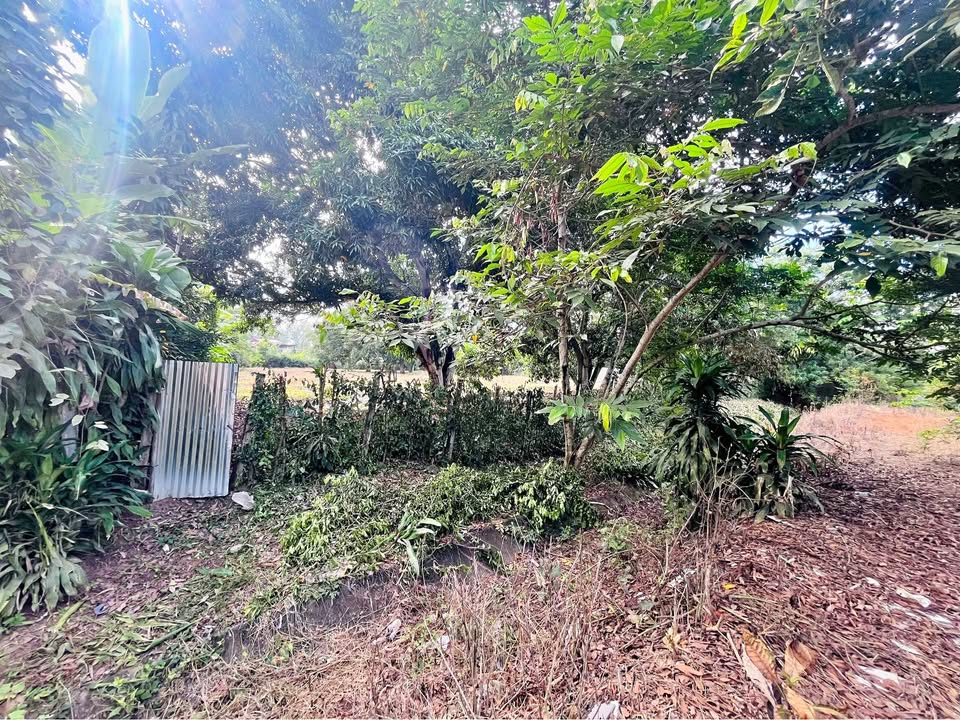

PEN1,500 530 m²

🚨 ¡OPORTUNIDAD PARA INMOBILIARIAS Y DESARROLLADORES! 🏗️✨ 🌟 Venta de Terreno plano ideal para proyecto de lotización Perfecto para invertir, desarrollar y generar alta rentabilidad 📈 📍 Ubicación estratégica: Ingreso por Carretera Oasis, antes del Mercado Santa Anita 🔗 https://maps.google.com/?q=-6.487949,-76.388695 📐 Área total: 3,530 m² 📃 Documentación en regla: Título de propiedad 🚰 Servicios disponibles: Acceso a agua y más 💡 Ideal para: • Proyecto de lotización • Desarrollo urbano • Inversión segura a mediano y largo plazo 🔥 PRECIO NEGOCIABLE – ¡Escuchamos propuestas! 📲 Contácta